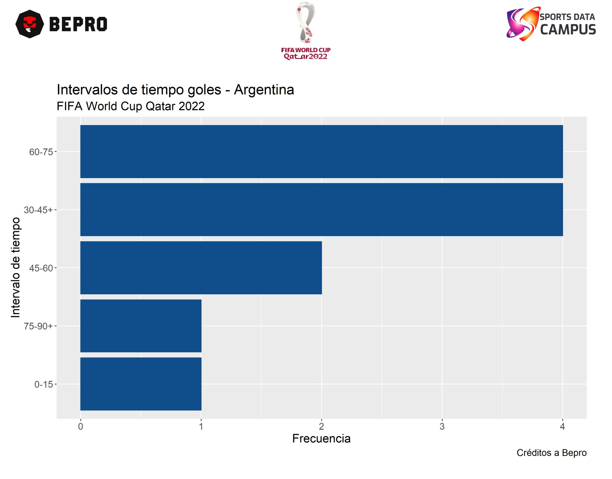
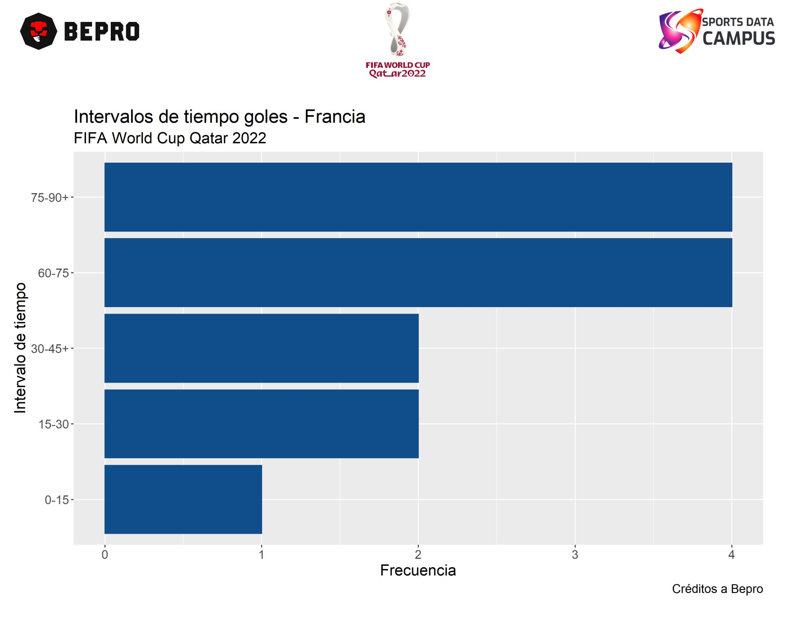
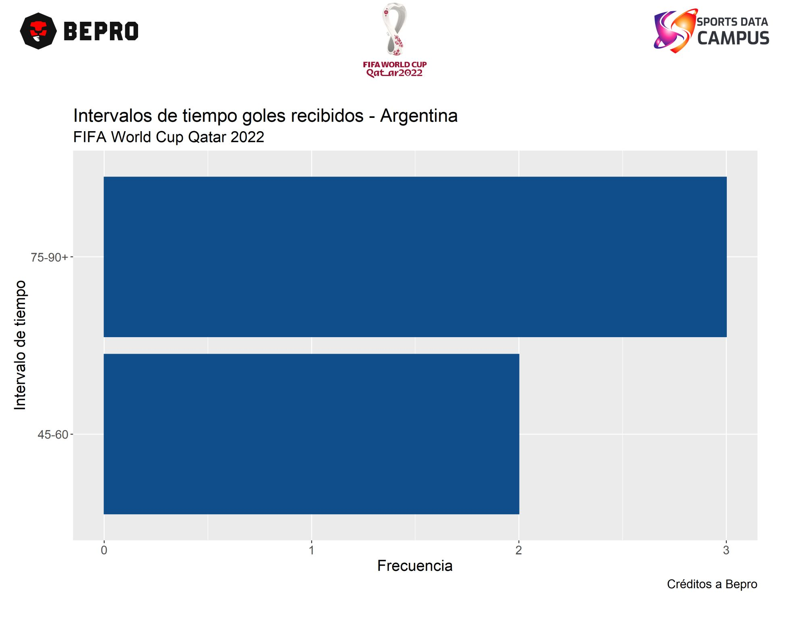
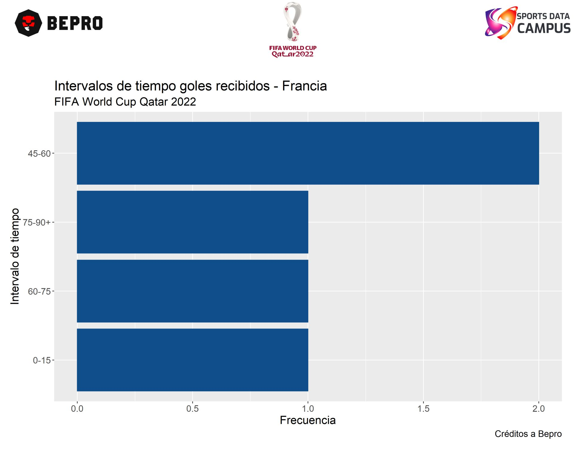
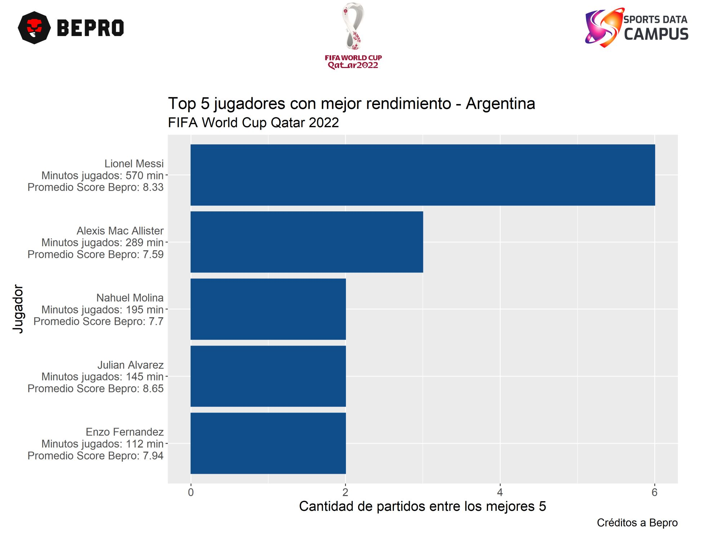
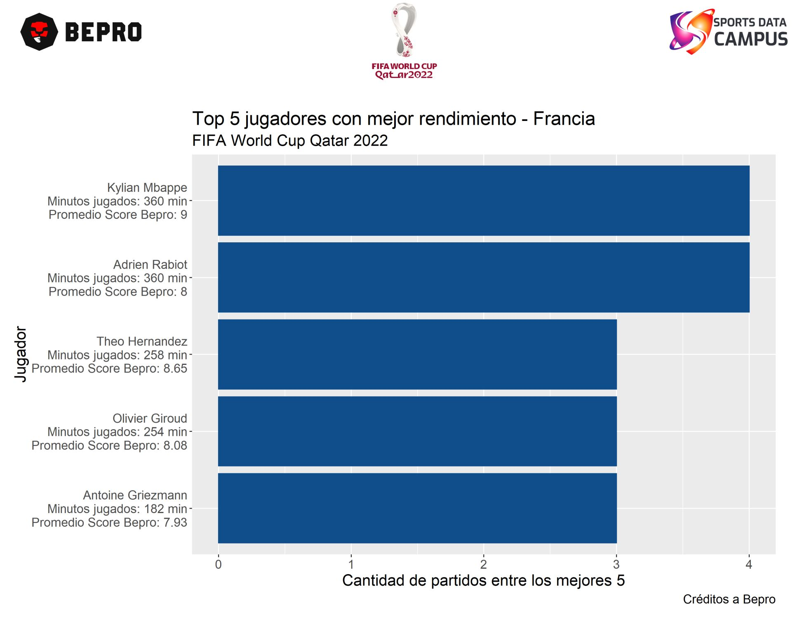

Gracias a los datos que proporcionan Sports Data Campus y BEPRO es posible saber en que momentos marcan ambos equipos así como los jugadores a seguir.
1 y 2. 📊 Tiempo en que marcan los goles,
💡 Argentina llega a la final con 12 goles anotados, 5 de ellos en el primer tiempo y 7 en el segundo.
💡 Francia por su parte llega a este partido con 13 goles anotados, 5 en el primer tiempo y 8 en el segundo tiempo.
3 y 4. 📊 Tiempo en el que reciben goles,
💡 Argentina ha recibido 5 goles, ninguno de ellos fue en el primer tiempo, todos fueron en el segundo tiempo.
💡 Francia llega con 5 goles recibidos, 1 de ellos en el primer tiempo y 4 en el segundo tiempo.
📌 Estos números nos indican que en el segundo tiempo es cuando ambos equipos realizan y reciben más goles.
5 y 6. 📊 Top 5 jugadores con mejor rendimiento.
💡 Argentina viene liderada por Lionel Messi que hasta este partido ha estado 6 veces entre los 5 mejores jugadores del partido que ha disputado. De lejos lo sigue Mac Allister con 3 juegos, el top lo completan Molina, Julián Álvarez y Enzo Fenandez.
💡 En Francia se tiene a Mbappe que ha estado 4 veces entre los 5 mejores jugadores del partido en disputa. Rabiot tiene la misma cantidad de juegos. De cerca le siguen Theo Hernandez, Giroud y Griezmann.
📌 En términos de constancia Lionel Messi lidera el mundial con esos 6 juegos en el top 5 de rendimiento.